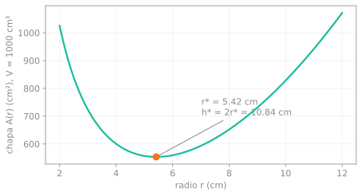
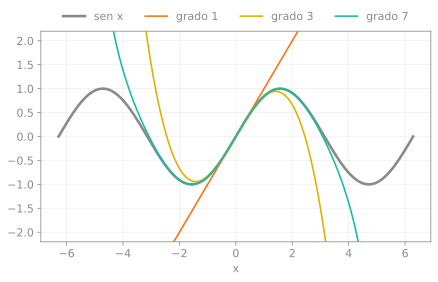

Verificar con SymPy lo que muestran las animaciones
Los scripts verificar_*.py de las animaciones comprueban con NumPy y SciPy que los números del video son correctos. Eso es una comprobación numérica: puede fallar en un caso que no probaste. Con SymPy se comprueba el resultado de forma exacta, con álgebra, y Matplotlib dibuja las figuras. Todo sale de un solo script: verificar_con_sympy.py.
1. El gradiente es perpendicular a la curva de nivel
La nota sobre el gradiente lo demuestra con la regla de la cadena. Acá lo comprobamos en el ejemplo $f = \tfrac12(x^2 + 3y^2)$. La curva de nivel $f = c$ es una elipse que se parametriza con $\mathbf r(t) = \big(\sqrt{2c}\cos t,\ \sqrt{2c/3}\,\sin t\big)$.
grad = sp.Matrix([sp.diff(f, x), sp.diff(f, y)])
r = sp.Matrix([sp.sqrt(2*c)*sp.cos(t), sp.sqrt(2*c/3)*sp.sin(t)])
sp.simplify(f.subs({x: r[0], y: r[1]}) - c) # 0: r(t) está en f = c
sp.simplify(grad.subs({x: r[0], y: r[1]}).dot(r.diff(t))) # 0: ∇f · r'(t)Las dos líneas devuelven 0 para todo $t$ y todo $c > 0$, no solo para algunos valores de prueba. Con la misma herramienta se resuelve la desigualdad $|1 - 3\alpha| < 1$ del zigzag y sale exactamente $0 < \alpha < \tfrac23$.
2. La lata óptima tiene h = 2r
Para un volumen $V$ fijo, la chapa es $A(r) = 2\pi r^2 + 2V/r$. SymPy resuelve $A'(r) = 0$ y entrega el radio óptimo:
$$r^* = \left(\frac{V}{2\pi}\right)^{1/3}, \qquad \frac{h^*}{r^*} = 2.$$El script verifica que ese cociente sea exactamente 2 y que $A''(r^*) > 0$, es decir, que es un mínimo y no un máximo. Para $V = 1000\ \text{cm}^3$ da $r^* \approx 5{,}42$ cm.

3. Los polinomios de Taylor de sen x
sp.series(sp.sin(x), x, 0, 10) devuelve el polinomio de grado 9, y el script lo compara con los coeficientes que usa la animación:

Qué prueba y qué no
SymPy comprueba la álgebra de estos casos concretos. No reemplaza la demostración general: la de la perpendicularidad vale para cualquier $f$ diferenciable, y acá solo verificamos un ejemplo.